By metalbabble.com
One of my recent projects has been creating new games for the legendary Atari 2600. These are real games that can play on real Atari systems!
Follow the links below to play these games online, or download the ROM and play them in your favorite emulator (such as Stella.) Additionally, these games can be ordered on actual game cartridges to add to your collection!
Have you played ATARI today?
*** FEATURED GAMES ***
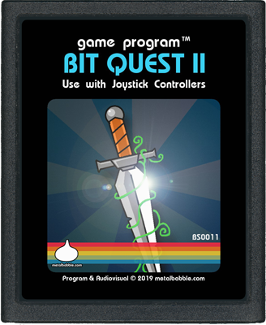
Bit Quest II
The quest continues! After rescuing the princess, the bit warrior is captured by the evil Baron Von Darkbit! Now the princess must take up the ancient sword and rescue her friend! Explore a huge overworld, battle with bitty baddies, traverse dungeons for power-ups and find the keys to the evil Baron's castle.
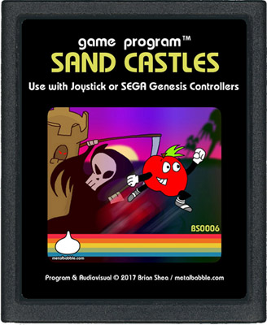
Sand Castles
Monsters have invaded Sand Castle island, help Jack the apple defeat the baddies and their evil leader. Supports multi-button SEGA Genesis controllers! (Includes full-color manual!)
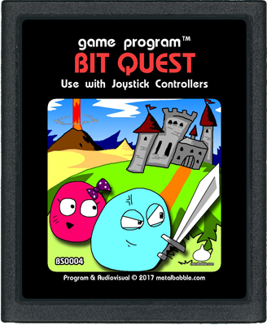
Bit Quest
Find the ancient sword, defeat the ruthless bad guys, and save the princess! (For even more challenge: the locations of the sword and dungeons can be randomized using the left difficulty switch!)
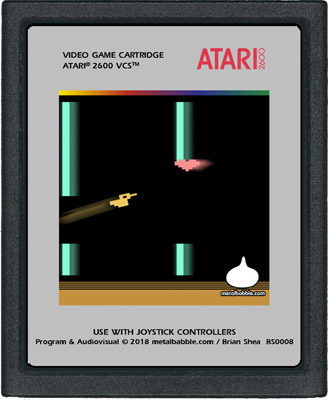
Flappy The Duck
Tap to flap! Use the joystick button to flap, but don't hit the walls. Grab hearts for extra points. This game features two difficulty levels (via left switch.)
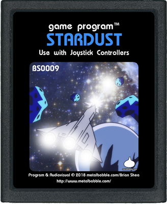
Stardust
Explore the galaxy, zap aliens, blast asteroids, uncover the locations of distant planets, and defeat the evil forces of the mysterious Dark Queen.
Nominated for best bb homebrew in the 2018 atari awards.
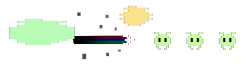
*** MORE GAMES ***
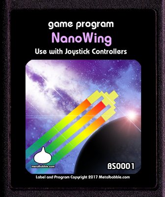
NanoWing 2600
A prequel to the 2005 metalbabble.com game "NanoWing" - avoid the obstacles while hurdling through hyperspace!
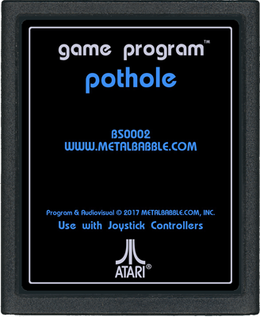
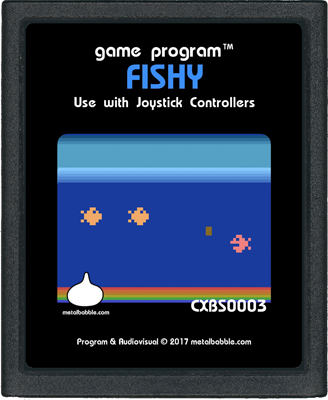
Fishy
For one or two players - whichever fish collects 5 points first, wins. Grab the power-ups to transform!
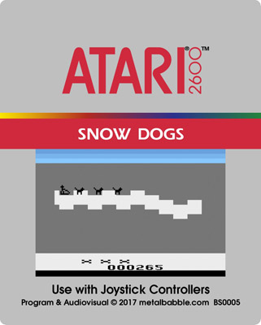
Snow Dogs
Mush a sled team along a snowy trail... Just don't run out of dog treats!
Cartridge only
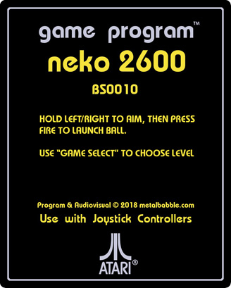
Neko 2600
A small experiment/game with gravity and simple ball physics. Hold left or right to pick a direction, then press the fire button to launch a ball. Aim for the moving targets below to rack up the points. Use the "Game Select" switch to select levels.
{kind=link}